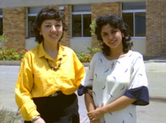

２９．「食べかけ、飲みかけを貰う、その裏は？」(写真有)
エジプト国内では知らない人から絶対に食べ物を貰ってはいけないと注意する看板があった。当然アラビア語であるから
私には分からないのだが友人に教えて貰った。記憶では黄色地に黒いドクロと文字が書いてあったと思う。日本人の誰かが
エジプトの子供にお菓子をあげたが絶対に受けとらなかった事があった。
エジプトに赴任して街中を歩き回るほど慣れない頃、近くの海岸によく散歩に行った。会社の仲間とも時々夕食に寄っ
て居たレストランで、散歩の折にコーヒーを飲むようになっていた。しょっちゅうそこに寄るのでマダムと親しくなった
。そんなある日の日曜日の午後ティータイムで立ち寄ったら、店も暇でフィリッピン人従業員とマダムの話の中に入る事
になった。私の前でマダムが噛み砕いた半分のクッキーをいきなり私に差し出した。こんな習慣は日本にはない。一体全
体エジプトではこの習慣にはどんな意味があるのだろうか、言葉はまだそんなに自由に英語を喋られない、しばらく迷っ
た、食べるべきか断るべきか。何か有ったら一目散に逃げる覚悟をして食べた。何も起きずに談笑はおわり無事部屋に戻
られた。
会社では男ばかりであるが、日本コンソーシアムという会社には女性も居た。コンソーシアムにいる、私の工場の担当
者に会いに行ったら、彼は不在で間もなく戻るとの事であった。しばらく待たせてもらうことにし社内の喫茶店にコーヒ
ーを注文した。なかなか持って来ない、これも何時もの事と思い待つ。これを見ていたモナさんが気を利かせてくれてア
ラビア語で再度督促をしてくれた、が来ない。横に居たシュリンが飲みかけのコーラを急に私に差し出してくれた。これ
でクッキーに続いて２回目である。一体何の意味があるのだろうか。断ろうとしたら、モナさんがニコニコというよりニ

ヤニヤして盛んに飲むように薦める。何か裏があり飲んだら最後、奴隷扱いにでもされるような気がした。シュリン、モナさ
ん二人でニヤニヤしているように見える。モナさんは再度、「貴方は紳士なのでしょう、女性がお近づきの印に差し出し
たのだから受けなさい」と言うので、頂く事にした。その結果、モナ、シュリンさんらと更に親しくなったような気がする。
左がモナさん、右が飲みかけのコーラをくれたシュリンさん。
|